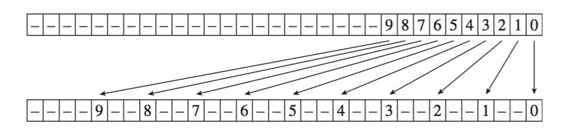
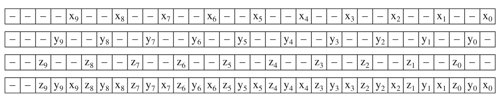

Bounding Volume Hierachy of pbrt 解析(2) HLBVH
Tags: renderer
HLBVH
上一篇文章介绍了recursiveBuild函数，它对静态场景做了一次自顶向下的BVH构造，且使用了一个叫SAH的切分技术。
recursiveBuild有2个缺点：
SAH的计算是\(O(n^{2}) \)的，且几乎每一个节点都要做SAH，性能并不是很理想；
自顶向下地构造BVH，很难应用并行计算来优先性能。
于是作者又发明了更复杂的HLBVHBuild，即 Hierarchical Linear Bounding Volume Hierarchy。
莫顿码 Morton Code
要理解HLBVH，首先要学一下莫顿码。
LeftShift3
LeftShift3函数： 输入一个32位正整数（这个数实际上必须小于等于1<<10即1024），函数会把第i位的值写入到第3i位，然后把其他无关的位清0。
因为输入的数小于等于1<<10，即只有10个有效bit[0,1,2,···,9]，最大的是第9bit，9*3=27，所以27bit之后的最后4个bits [28, 29, 30 ,31]，必然都是0。下面函数的注释也已标明。
示意图：

（from pbrt v3)
实现代码如下，用了位运算技巧，需要慢慢理解（看注释，每一轮变换都是一次分隔，变换后都给出了有效位的新位置）：
inline uint32_t LeftShift3(uint32_t x) {
Assert(x <= (1 << 10));
if (x == (1 << 10)) --x;
x = (x | (x << 16)) & 0b00000011000000000000000011111111;
// x = ---- --98 ---- ---- ---- ---- 7654 3210
x = (x | (x << 8)) & 0b00000011000000001111000000001111;
// x = ---- --98 ---- ---- 7654 ---- ---- 3210
x = (x | (x << 4)) & 0b00000011000011000011000011000011;
// x = ---- --98 ---- 76-- --54 ---- 32-- --10
x = (x | (x << 2)) & 0b00001001001001001001001001001001;
// x = ---- 9--8 --7- -6-- 5--4 --3- -2-- 1--0
return x;
}
EncodeMorton3
理解了LeftShift3后再来理解EncodeMorton3就很简单了，就一行代码：
(LeftShift3(v.z) << 2) | (LeftShift3(v.y) << 1) | LeftShift3(v.x);
调用了三次LeftShift3，分别输入了向量v的x、y、z分量。因为LeftShift3作用是用2个0bit分割有效位，所以EncodeMorton3里，LeftShift3(v.y) 需要整体左移1个bit，LeftShift3(v.z)则是2个bit，填满了总共3 * 10 = 30个bit（还有2个0bit可不管）。
实现代码如下：
inline uint32_t EncodeMorton3(const Vector3dF &v) {
Assert(v.x >= 0 && v.x <= (1 << 10));
Assert(v.y >= 0 && v.y <= (1 << 10));
Assert(v.z >= 0 && v.z <= (1 << 10));
return (LeftShift3(v.z) << 2) | (LeftShift3(v.y) << 1) | LeftShift3(v.x);
}
示意图：

HLBVHBuild
BVHBuildNode *BVHSystem::HLBVHBuild(
ComponentHandle<BVHAccel> bvhAccel,
MemoryArena &arena,
const std::vector<BVHObjInfo> &objInfo,
int *totalNodes,
std::vector<ObjectID> &orderedObjs) {
// 1. 计算所有物体中心坐标的包围盒
BBox bounds;
for (const BVHObjInfo &pi : objInfo)
bounds = Union(bounds, pi.centroid);
// 2. 并行计算每所有物体的MortonObj信息
std::vector<MortonObj> mortonObjs(objInfo.size());
ParallelFor([&](int i) {
// 莫顿码共10位
constexpr int mortonBits = 10;
constexpr int mortonScale = 1 << mortonBits;
mortonObjs[i].objIndex = objInfo[i].objNumber;
// centroidOffset是该obj中心在包围盒里的百分比坐标
Vector3dF centroidOffset = bounds.Offset(objInfo[i].centroid);
// 把百分比坐标映射到[0, 1024]，然后编成莫顿码
mortonObjs[i].mortonCode = EncodeMorton3(centroidOffset * mortonScale);
}, objInfo.size(), 512);
// 3. mortonObjs数组做排序
RadixSort(&mortonObjs);
Create LBVH treelets at bottom of BVH
Create and return SAH BVH from LBVH treelets
}
RadixSort代码：
static void RadixSort(std::vector<MortonObj> *v) {
std::vector<MortonObj> tempVector(v->size());
constexpr int bitsPerPass = 6;
constexpr int nBits = 30;
Assert((nBits % bitsPerPass) == 0);
constexpr int nPasses = nBits / bitsPerPass;
for (int pass = 0; pass < nPasses; ++pass) {
// Perform one pass of radix sort, sorting _bitsPerPass_ bits
int lowBit = pass * bitsPerPass;
// Set in and out vector pointers for radix sort pass
std::vector<MortonObj> &in = (pass & 1) ? tempVector : *v;
std::vector<MortonObj> &out = (pass & 1) ? *v : tempVector;
// Count number of zero bits in array for current radix sort bit
constexpr int nBuckets = 1 << bitsPerPass;
int bucketCount[nBuckets] = { 0 };
constexpr int bitMask = (1 << bitsPerPass) - 1;
for (const MortonObj &mp : in) {
int bucket = (mp.mortonCode >> lowBit) & bitMask;
Assert(bucket >= 0 && bucket < nBuckets);
++bucketCount[bucket];
}
// Compute starting index in output array for each bucket
int outIndex[nBuckets];
outIndex[0] = 0;
for (int i = 1; i < nBuckets; ++i)
outIndex[i] = outIndex[i - 1] + bucketCount[i - 1];
// Store sorted values in output array
for (const MortonObj &mp : in) {
int bucket = (mp.mortonCode >> lowBit) & bitMask;
out[outIndex[bucket]++] = mp;
}
}
// Copy final result from _tempVector_, if needed
if (nPasses & 1) std::swap(*v, tempVector);
}